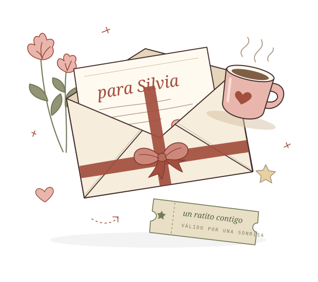

UNA PEQUEÑA SORPRESA PARA TI
Silvia,
te guardé
un ratito.
Hice un caminito de cosas bonitas.
Y, al final, hay algo que quiero preguntarte.
¿Lo recorremos juntos?

UNA PEQUEÑA SORPRESA PARA TI
Hice un caminito de cosas bonitas.
Y, al final, hay algo que quiero preguntarte.
¿Lo recorremos juntos?
